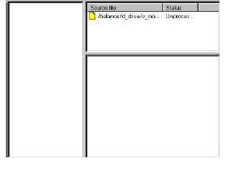
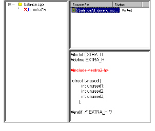
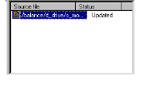

Simplifying a Source File’s Header Files
1 In the Results window, select one or more source files.
2 Do one of the following:
• Select Tools > Reengineer > Simplify.h.
• Click .
A Simplify window and two new toolbar buttons appear.

3 Do one of the following:
• Select Simplify > Substitute mode.
• Click .
• Under Source file in the Simplify window, select the source file.
Simplify parses the source file and displays it’s header tree in the left pane.

4 If a header in the header tree is marked with a red X, it is an unused header that can be removed from the source file. The header file that will be uncommented out in the source file is marked red in the bottom right pane.
5 To remove unused headers, do one of the following:
• Select Simplify > Update source.
• Click
Note: If you close the Simplify window before updating the source file, Simplify notifies you that unnecessary header files were deleted and prompts you to remove them from your source code.
6 Simplify updates the source file.

If you open the source file in your IDE, you will notice that DIScover added comments about the header files that were removed. For example:
#include <conio.h>
/* #include "extra2.h" DISCOVER_SIMPLIFY REMOVED */
#include <iostream.h>
#include <string.h>
#define MAX 10
#include <io.h>
#include <fcntl.h>